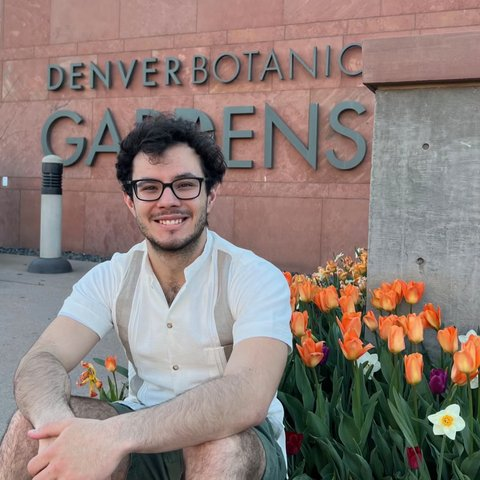

Juan Pablo Cisneros is a PhD student in the Department of Mechanical Engineering. Originally from Aguascalientes, Mexico, he earned his bachelor's degree in Mechatronics Engineering and a graduate certificate in Robotic Systems from Universidad Panamericana. He has worked as a Mechanical Designer in industry and as a CAD lecturer in academia.
At the BEEM Lab, his research focuses on printed electronics for hydroponic monitoring and soil sensor deployment.
Outside the lab, Juan Pablo enjoys hiking, trying out new restaurants, playing board games, and exploring all things nerdy.